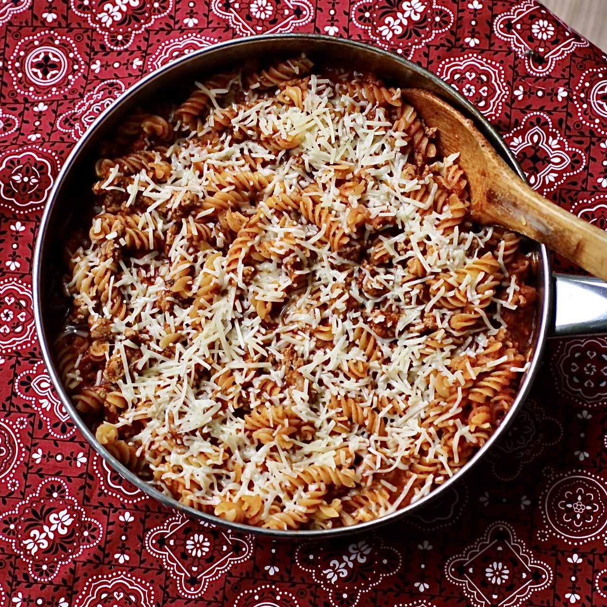

Easy One-Pot Ground Turkey Pasta

Description
This is a quick and easy one-pot main dish meal. Subsitute your
favorite ground meat, broth, sprices, and pasta shape. For those
who want an easy meal or those beginning too cook - this is for you.
Ingredients
- 1 pound ground turkey
- 1 medium onion, chopped
- 3 cloves garlic, minced
- 2 tablespoons chopped fresh oregano
- 1 teaspoon garlic powder
- 1 teaspoon dried basil
- 3 cups rotini pasta
- 1 (28 ounce) jar spaghetti sauce
- 1 (14 ounce) can chicken broth
- 1/4 cup freshly grated Parmesan cheese, or to taste
Directions
- Heat a high-sided 12 nich skillet with a lid over medium heat.
- Add ground turkey, onion, and fresh garlic. Cook, stirring occasionally, until meat is browned, about 8 minutes.
- Season with oregano, garlic powder, and basil.
- Pour in pasta sauce and broth, making sure pasta is completely covered.
- Bring to a boil, reduce heat, cover, and cook until past is tender yet firm to the bite, 7 to 10 minutes.
- Top with Parmesan cheese.
Return to home